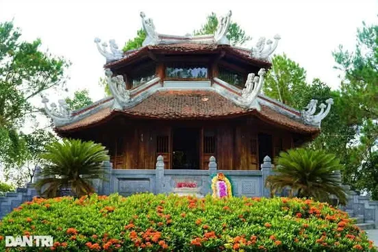

Điểm nhấn tâm linh
Đền Thờ Cố TBT Lê Duẩn & Cầu Đỏ
Tọa lạc trang nghiêm trên một bán đảo xanh mát giữa lòng hồ. Cây cầu đỏ uốn lượn duyên dáng nối đôi bờ trở thành biểu tượng kiến trúc đầy thơ mộng.
Kiến trúc hài hòa thiên nhiên